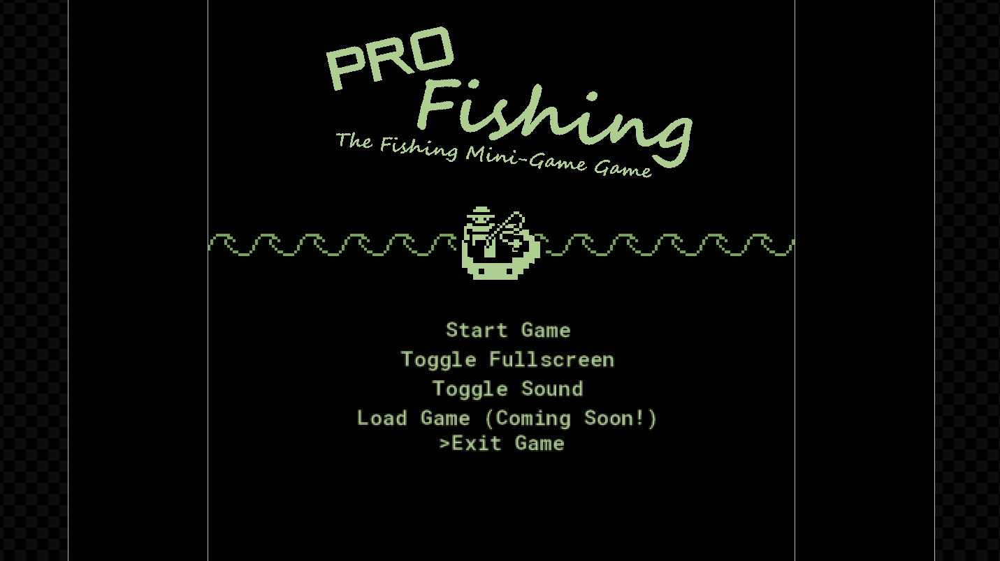
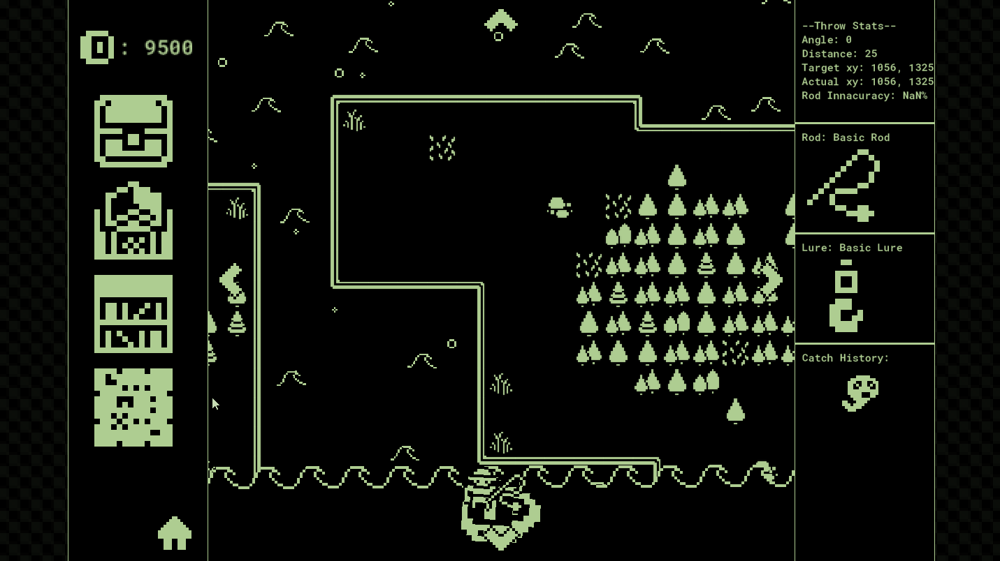
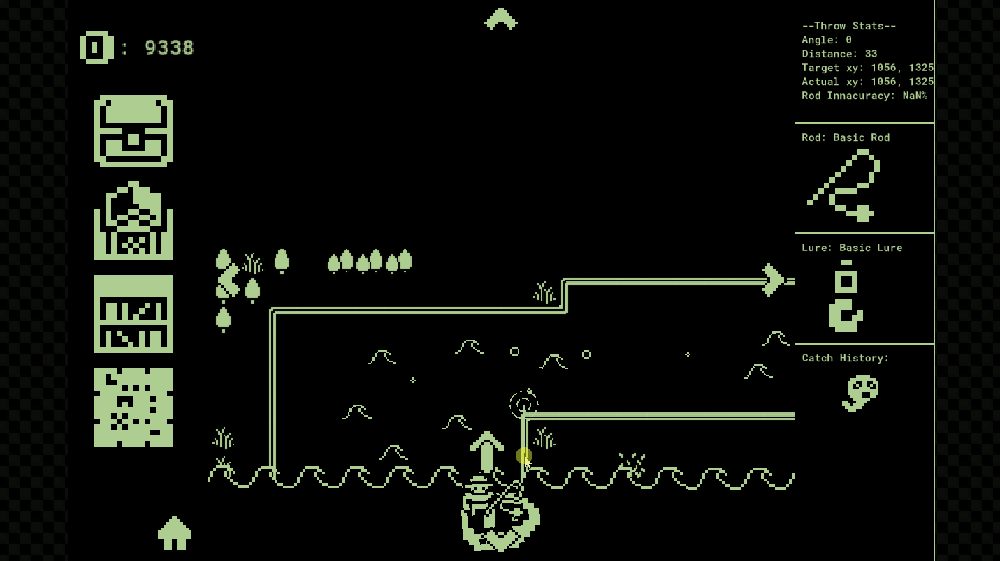
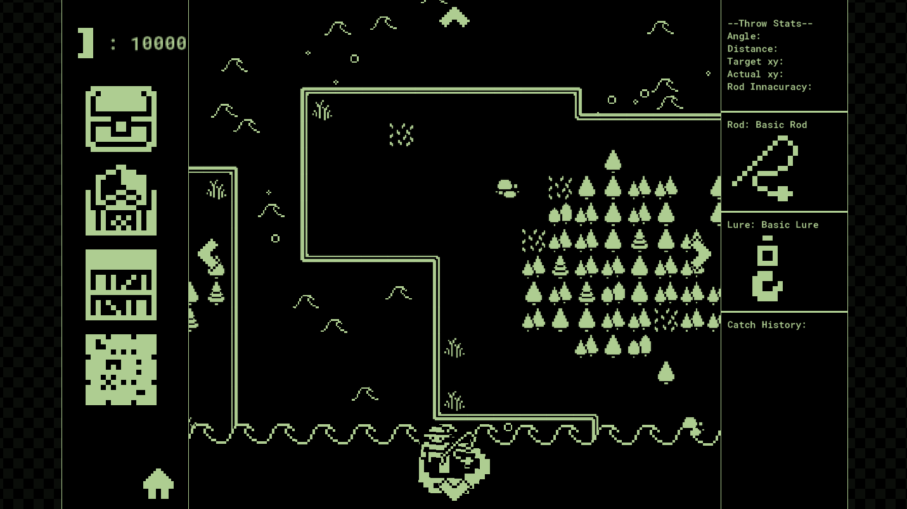

Game Jam
Arcade Fishing
Can You Catch All The Fish? Explore The World Of Pro Fishing! Discover 5+ Rods, 20+ Lures, 30+ Fish across 4 Unique Regions! Each with its own unique soundtrack!
Features
30+ Fish
Catch a wide variety of fish with unique behaviors.
4 Regions
Explore distinct environments with their own soundtracks.
Gear Up
Unlock 5+ rods and 20+ lures to catch 'em all.
Tech Specs
Engine
GameMaker
Mode
Single-Player
Platform
Windows
Theme
Keep it alive
Released
April 20, 2020